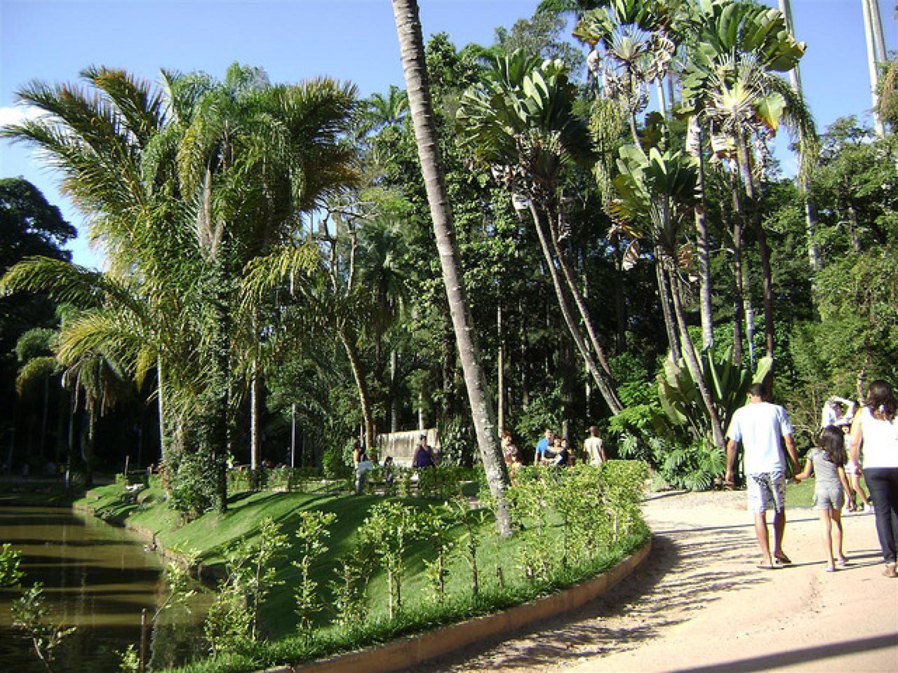

-
Relate
Viu bueiro entupido, lixo na calçada ou água acumulada? Escolha o bairro, descreva em poucas palavras e envie.
-
Acompanhe
O relato entra no cartão do seu bairro, marcado como pendente de verificação, para a Defesa Civil planejar a limpeza.
-
Previna
Cada relato vale pontos para você e para o seu bairro. Com a previsão de chuva e o sensor no bueiro, a manutenção chega antes da água.
Moradores, sensores e Defesa Civil de Juiz de Fora juntos contra alagamentos e deslizamentos: prevenir antes da chuva, alertar quando ela aperta e responder rápido se o pior acontecer.

Menos lixo na rua,
mais caminho pra água.
Por isso a prevenção começa no bueiro da sua esquina.
Parque do Museu Mariano Procópio, Juiz de Fora. Foto: bolapiercing · CC BY 2.0, com recorte e escurecimento.
0relatos registrados
0seus pontos
Vizinhonível atual
Tudo isso fica só no seu navegador.
Escolha o seu bairro
40 bueiros com sensor em 11 bairros (pontos fictícios em ruas reais). Tem um perto de você? Conte o que está vendo por lá.
Lá embaixo, quem mede é o sensor
Um sensor de baixo custo na tampa do bueiro mede a distância até o que está acumulado. Arraste e veja a regra que roda no Arduino decidir o estado do ponto.
0%
Demonstração didática. Não é uma leitura real; os limites de 40% e 70% ainda precisam de validação.
Quando a chuva aperta
Da encosta ao abrigo
Bueiro limpo evita alagamento. Nos morros, o perigo é o deslizamento, e ele dá sinais antes: chuva acumulada, solo se mexendo, rachaduras. O Pluvial junta esses sinais, avisa a tempo e ajuda a tirar todo mundo de casa.
-
1
Central de risco
Chuva de 3 dias, sensores de inclinação e avisos dos moradores viram um nível de risco por encosta. A Defesa Civil confere e define o nível.
Painel das autoridades -
2
Alerta que pergunta
A central confirma e dispara sirene e WhatsApp com abrigo e rota. O morador responde: estou seguro, preciso de ajuda ou tem gente presa.
Ver o meu alerta -
3
Totem na rua
Para quem está sem celular, sem bateria ou sem sinal: alerta em letras grandes, rota a pé até o abrigo, botão de socorro e orientação em voz.
Ver abrigos e rotas -
4
Vizinhos juntos
Moradores avisam riscos, registram ocorrências e combinam quem ajuda quem. Tudo vale pontos para o bairro.
Registrar ocorrência
No painel do morador você escolhe a sua encosta e vê o alerta, o abrigo e a rota. Dados de demonstração.
Quem mais cuida da própria rua
Cada relato vale 10 pontos para você e para o seu bairro. Os outros moradores são fictícios; os seus pontos ficam neste navegador.
Você ainda não pontuou. e entre no ranking.
Bairros
Moradores
Troque seus pontos
A ideia é trocar pontos por descontos no comércio do bairro, mudas de árvore e kit chuva. Parceiros fictícios nesta demonstração.
- Vizinho 0 pontos
- Guardião 30 pontos
- Sentinela 80 pontos
- Referência do bairro 160 pontos
Quem somos
Estudantes de Engenharia de Software com uma pergunta simples: e se a prevenção de enchentes começasse na rua de cada morador? O Pluvial é um projeto acadêmico do Challenge FIAP 2026 que junta a comunidade, sensores de baixo custo no bueiro e na encosta, uma central de risco e totens na rua para prevenir, alertar e responder às chuvas fortes.
Abrir o painel do morador Painel das autoridades